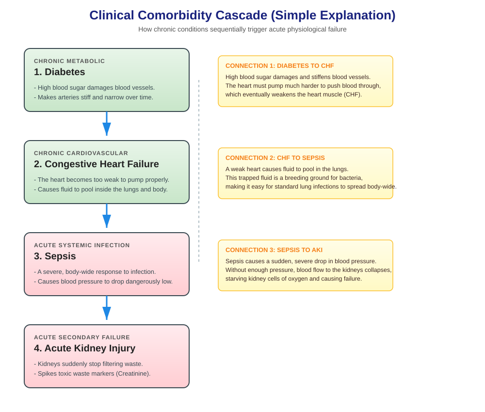
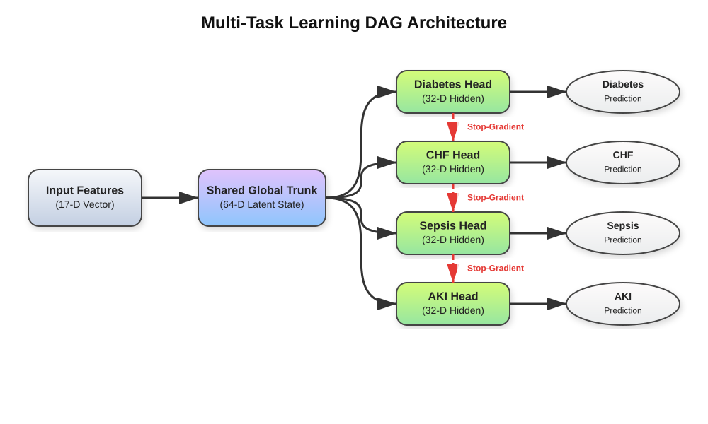
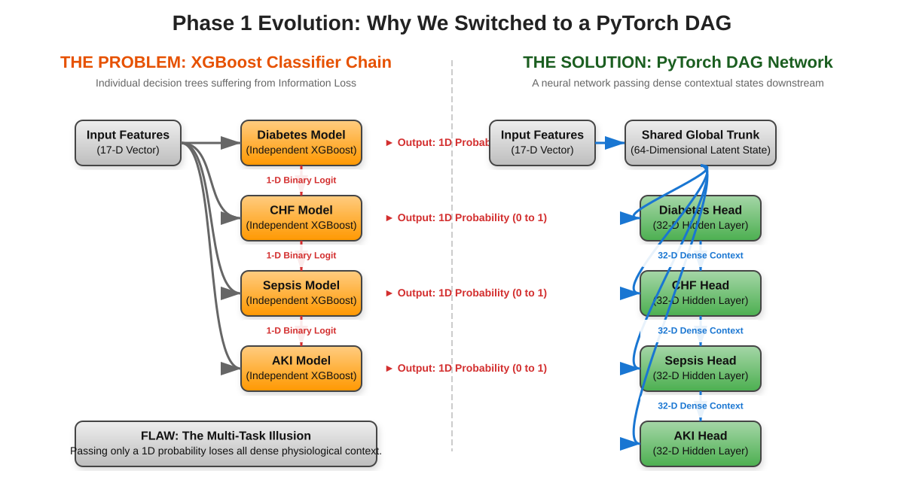
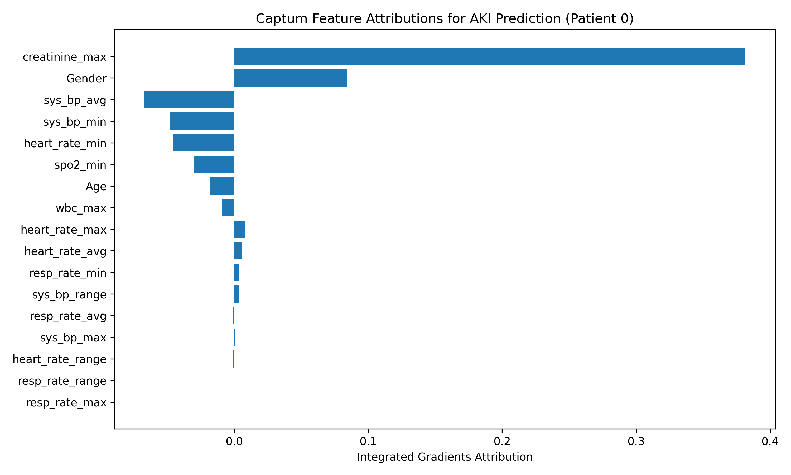

Team: Vishvambar Ramesh Udavant, Ish Prafull Chaniyara, Sagar Shahgond
Faculty Guide: Dr. Ranjana Kale
MIT ADT University, Pune
Why we built this system
In the ICU, monitors are constantly beeping. Most are false alarms because traditional systems look at diseases (Sepsis, AKI, CHF, Diabetes) separately, ignoring how they are connected.
A patient's baseline health (Diabetes) weakens their body, making them more susceptible to infection (Sepsis), which then damages their kidneys (AKI).
Separate models (like XGBoost) only pass a simple "Yes/No" or a single percentage to the next model, losing all detailed clinical context.

The PyTorch DAG Architecture

We built a network using PyTorch structured as a Directed Acyclic
Graph (DAG) that flows like a timeline:
Diabetes → CHF → Sepsis → AKI
Instead of passing a single "Yes/No", our network passes a 32-dimensional hidden vector (a bundle of 32 numbers representing the detailed patient state).
.detach()) TrickNormally, downstream errors (AKI) ruin upstream predictions
(Diabetes). We used .detach() to block
backward error flow while letting clinical context flow forward.
52,378 adult ICU patient records from the real-world MIMIC-IV database.
17 simple features: Age, Gender, and vitals (HR, BP, RR) along with their changes (Min, Max, Avg, Range).
Standard training fails on mostly healthy datasets. We used Focal Loss to force the model to focus on rare, hard-to-predict sick patients.
Making it safe for the ICU
We ran a strict safety check to prevent alarm fatigue. The model must meet two strict thresholds simultaneously:
Viable & Highly Accurate!
XGBoost vs. PyTorch DAG
On the exact same dataset, the PyTorch DAG model improved AKI prediction precision from 0.700 (XGBoost) to 0.719.
The AKI head looks at the 32-D context vector flowing from Sepsis, CHF, and Diabetes, making a much smarter decision than isolated trees.

Proving the AI thinks like a doctor

Doctors will not trust a model if they don't know why it made a prediction. We used PyTorch Captum to calculate feature importance.
Medical Validation: The model naturally learned that Creatinine and low blood pressure (BP Min) cause kidney failure, proving it learned real medicine.
Live Demo Overview
We didn't just build code; we built a working, real-time website dashboard.
Built with React. Features a premium dark mode UI and dynamic medical risk gauges.
Built with FastAPI, serving our trained PyTorch DAG model in real-time with sub-second latency.
Making the system fully ready for hospital deployment
Connect Diabetes, CHF, and Sepsis in parallel to feed into AKI for realistic comorbidity.
Evaluate PCGrad to resolve conflicting task gradients instead of blocking them.
Let the model automatically discover disease links using Graph Neural Networks (GNNs).
Move from statistical ranges to raw sequence data using LSTMs or Transformers.
We are open to your questions.